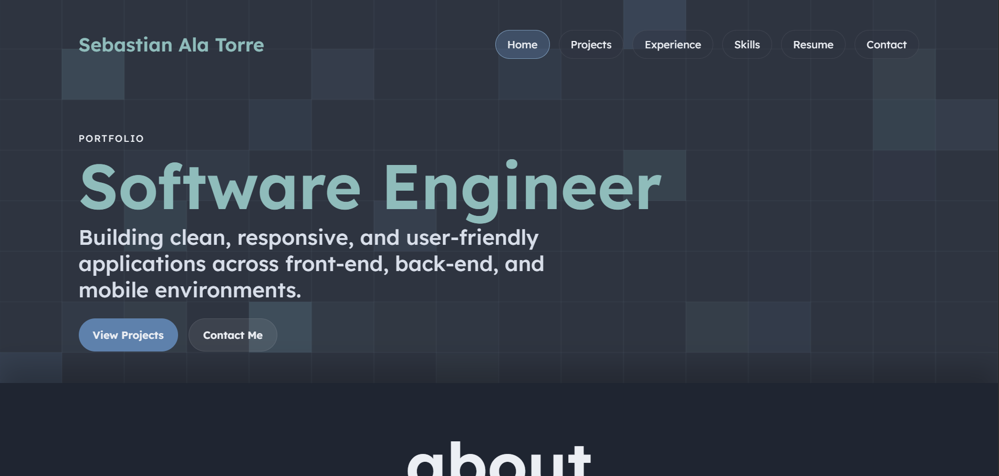

Peer Review 2

General File Structure
- Site Creator: Melara, Bryan
- Site URL: Project Link
- Naming Convention: Follows conventions.
- Link Accuracy: Links to pages work fine.
Design & CRAP Principles
- Contrast: Contrast is good.
- Repetition: Fine. Standard .css file is used.
- Alignment: The alignment of the header and the main content feels offset but that might just come down to preference.
- Proximity: Proximity is good.
Page Structure Requirements
- Header: Present but not a consistent H1. Might not be an issue for this project.
- Navigation: Present and consistent across all pages.
- Main: Starts with Page Name (H2). Lacks brand tagline.
- Footer: Not present and lacks HTML/CSS validation links.
Content & Accessibility
- Minimum Pages: True (6 pages).
- Home Page: Has required content.
- Validation: Both HTML and CSS buttons are not present.
- Accessibility: Other pages are accessible.
Final Remarks
Clean looking page overall. The assignment did specify needing a footer. You might want to implement the component script as well.